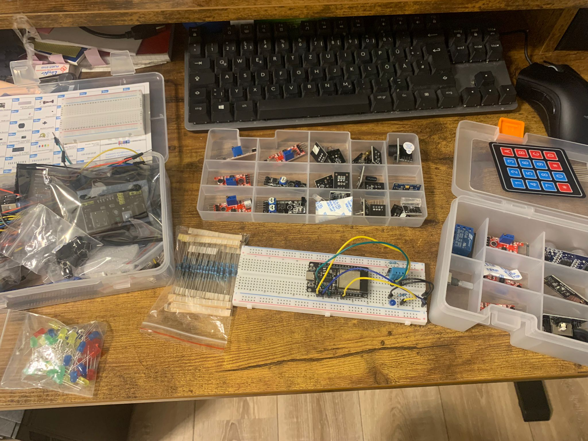

Communication
As everything on the website, this is a work in progress.
I have always been interested in acquiring "meta-skills." Learning how to do a thing is great fun, but that process can be accelerated by learning how to learn.
These concepts span many contexts. For instance, "The Power of Habit" taught me how to build habits that catalyze long-term success in any area. Other examples include biomechanics, learning strategies, and project management.
Less Wrong
The Rationality Community on LessWrong offers a powerful reasoning framework. Key concepts include updating beliefs and assessing probabilities.
Steel Manning
Steel manning is one of the most important conversational tools I’ve learned. It involves embodying a counter-argument in a way that its proponents would recognize as accurate. Daniel Schmachtenberger explains it beautifully on the Lex Friedman podcast.
